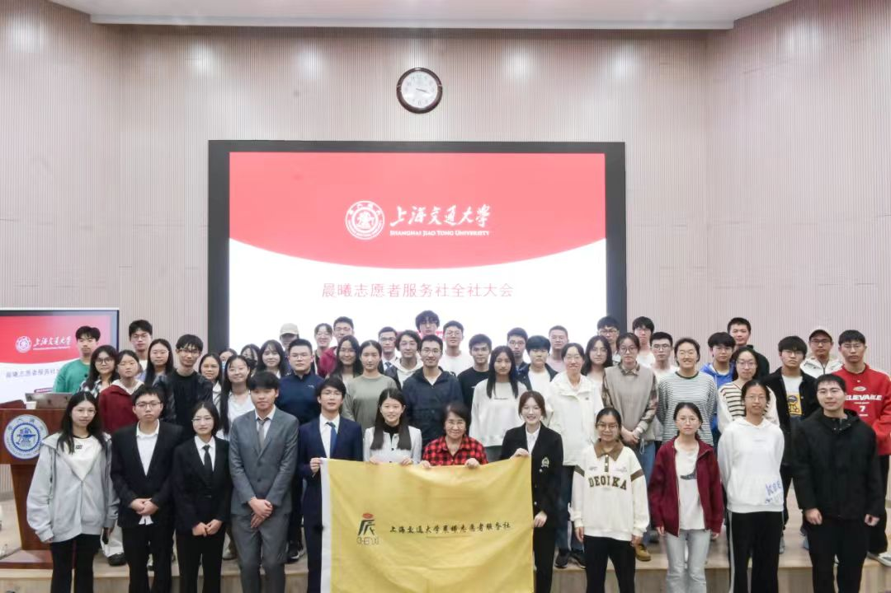

Judicial Practice
Interned with the Fourth Civil Division (Foreign-Related Affairs Division) of the Shandong High People's Court, with exposure to foreign-related legal practice and adjudicative work.
About
Xueting Zhang studies toward dual bachelor's degrees in English and Law at Shanghai Jiao Tong University. Her academic and extracurricular path reflects an interest in cross-border legal communication, especially where language, argumentation, and comparative legal analysis intersect.
Her recent work includes participation in legal translation, legal English, business debate, and international commercial arbitration competitions, together with internships and research related to law and public institutions.
Professional Formation
Interned with the Fourth Civil Division (Foreign-Related Affairs Division) of the Shandong High People's Court, with exposure to foreign-related legal practice and adjudicative work.
Worked at Jintiancheng Law Firm (Jinan), with exposure to legal workflows, case materials, and client-oriented legal support.
Interned at the Commercial Legal Center of the China Council for the Promotion of International Trade, Shandong Provincial Committee.
Leadership
As President of the Chenxi Volunteer Service Society, she worked with more than 300 members in coordinating thirteen long-term public service initiatives.
These activities included youth mental health support, companionship for critically ill children receiving out-of-town treatment, and educational assistance for children with leukemia, alongside other volunteer programs organized on campus and in the community.
